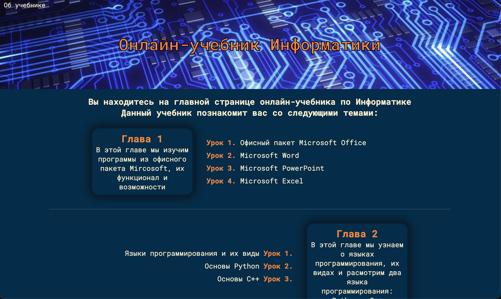

Онлайн-учебник информатики
Сайт учебник информатики с такими темами как: Офисный пакет Microsoft, Основы C++ и Python, Обзор популярных ОС.
Технологии: HTML, CSS, JavaScript

Сайт учебник информатики с такими темами как: Офисный пакет Microsoft, Основы C++ и Python, Обзор популярных ОС.
Технологии: HTML, CSS, JavaScript
